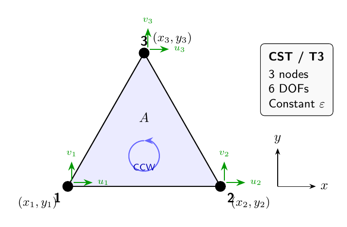

2D Triangular Elements#
This chapter focuses on the 3-node constant strain triangle used by femlabpy.
The goal is not just to derive the element, but to show how the source code
organizes the geometry, the element matrices, and the global assembly path.
The implementation in src/femlabpy/elements/triangles.py
uses the same conventions throughout:
Topology rows are 1-based and follow
[n1, n2, n3, mat_id].Element coordinates
Xeare always passed as a(3, 2)array.Solid-mechanics displacements are ordered
[u1, v1, u2, v2, u3, v3].Scalar potential problems use one DOF per node and reuse the same geometry.
Geometry and array layout#
{kind=link}

Figure 4.1: 3-node constant strain triangle (T3/CST) with counter-clockwise node ordering and 2 DOFs per node.#
The CST is the simplest 2D solid element, but the code is still careful about geometry because the element is only valid when the triangle has a positive area and the node order is counter-clockwise.
For a triangle with vertices (x1, y1), (x2, y2), and (x3, y3), the area
is computed from the edge differences. The source uses the helper
_triangle_geometry(Xe) for one element and _triangle_batch_geometry(Xe) for
many elements at once. Both helpers return the same information:
edge-difference vectors used to build the gradients of the shape functions
the absolute area of the triangle
That split matters because the element routines use the same geometry in three different places:
ket3efor one element stiffness matrixkt3efor batched global stiffness assemblyqet3eandqt3efor strain/stress or gradient recovery
Shape functions and gradients#
Area (barycentric) coordinates#
The triangle uses area coordinates \(L_1, L_2, L_3\). For a point \(P\) inside a triangle with vertices \(1, 2, 3\):
where \(A\) is the total area and \(A_i\) is the area of the sub-triangle formed by replacing vertex \(i\) with point \(P\).
By construction, these coordinates satisfy:
Derivation of shape functions#
The position of any point in the triangle is interpolated as:
Expanding in \(x\) and \(y\) components with the partition of unity:
Rearranging:
In matrix form:
Inverting to solve for \(L_1, L_2\):
where \(2A = (x_1 - x_3)(y_2 - y_3) - (x_2 - x_3)(y_1 - y_3)\) is twice the triangle area.
Shape function gradients#
Since \(N_i = L_i\), the gradients follow directly from the inverse mapping:
These gradients are constant over the element because they depend only on the vertex coordinates, not on position. This is why the CST produces a constant strain field.
The source computes those gradients from the edge-difference helpers rather than by symbolic manipulation at runtime. For a single triangle, the derivative array is built as:
a, area = _triangle_geometry(Xe)
dN = (1.0 / (2.0 * area)) * np.column_stack([-a[:, 1], a[:, 0]]).T
The resulting dN has shape (2, 3):
row 0 is
dN/dxfor the three nodesrow 1 is
dN/dyfor the three nodes
This layout is reused in both the solid and scalar-potential kernels.
Strain-displacement matrix#
Derivation from kinematics#
For 2D plane problems, the strain-displacement relations are:
Using the finite element interpolation \(u = \sum_i N_i u_i\) and \(v = \sum_i N_i v_i\):
For the element displacement vector:
The strain vector in Voigt form is:
Strain-displacement matrix structure#
Using the notation \(b_i = y_{j} - y_{k}\) and \(c_i = x_{k} - x_{j}\) (cyclic permutation), where indices \((i,j,k)\) cycle through \((1,2,3)\):
This can be written as \(\mathbf{B} = [\mathbf{B}_1 | \mathbf{B}_2 | \mathbf{B}_3]\) where each \(\mathbf{B}_i\) is:
Why the CST is constant strain#
Since \(b_i\) and \(c_i\) depend only on nodal coordinates (not on position within the element), \(\mathbf{B}\) is constant. Therefore:
This is the defining characteristic of the Constant Strain Triangle.
Element stiffness derivation#
Principle of virtual work#
The element stiffness matrix is derived from the strain energy:
Since \(\mathbf{B}\) is constant over the element:
This is exact—no numerical integration is needed.
Implementation in ket3e#
a, area = _triangle_geometry(Xe)
dN = (1.0 / (2.0 * area)) * np.column_stack([-a[:, 1], a[:, 0]]).T
B = np.array(
[
[dN[0, 0], 0.0, dN[0, 1], 0.0, dN[0, 2], 0.0],
[0.0, dN[1, 0], 0.0, dN[1, 1], 0.0, dN[1, 2]],
[dN[1, 0], dN[0, 0], dN[1, 1], dN[0, 1], dN[1, 2], dN[0, 2]],
],
dtype=float,
)
D = _elastic_matrix(props, plane_strain=plane_strain)
Ke = (B.T @ D @ B) * area
The important point is that ket3e never approximates the integral with Gauss
points. The CST has constant strain, so the exact element matrix is simply
The optional third entry in Ge switches between plane stress and plane strain.
The function reads Ge[2] only when it is present and equal to 2.
Batched assembly in kt3e#
The global assembler is where the implementation becomes more performance oriented. The source avoids a Python loop over node pairs and instead builds the element data for the full topology batch first:
nodes = topology[:, :3].astype(int) - 1
materials = as_float_array(G)[topology[:, -1].astype(int) - 1]
edges, area = _triangle_batch_geometry(coordinates[nodes])
From there, the code constructs a batched B tensor with shape (nel, 3, 6)
and a batched constitutive tensor with shape (nel, 3, 3). The actual matrix
product is done with np.einsum:
element_matrices = area[:, None, None] * np.einsum(
"eik,ekl,elj->eij", B.transpose(0, 2, 1), D, B
)
That line is the key step in the implementation. It means:
eindexes the element numberiandjare the local DOF indiceskandlare the contracted strain-space indices
So instead of looping over elements in Python, the code performs the full batch
of B^T D B products in one vectorized call.
The scatter step uses element_dof_indices(nodes, 2, one_based=False) and then
either:
np.add.atfor dense global matricesa COO sparse accumulation path for sparse global matrices
That separation keeps the assembly code fast without changing the public API.
Stress and flux recovery#
The recovery routines follow the same geometry logic, but they return more than just the stiffness matrix:
qet3ecomputes one element’s strain, stress, and internal force vectorqt3eloops over all triangles and scatters the internal force contributions
The returned arrays are shaped so downstream code can treat each element as a small table:
Seis(nel, 3)for[sxx, syy, txy]Eeis(nel, 3)for[exx, eyy, gxy]
The batched recovery path mirrors the stiffness assembly path closely:
E = np.einsum("eij,ej->ei", B, element_displacements)
S = np.einsum("ei,eij->ej", E, D)
element_vectors = area[:, None] * np.einsum("eij,ej->ei", B.transpose(0, 2, 1), S)
The arrays are intentionally kept in element-major order so the caller can store or postprocess them without reconstructing the mesh connectivity.
Scalar potential version#
The same geometry is reused for scalar potential and heat-flow problems through
ket3p, qet3p, kt3p, and qt3p.
The difference is only the DOF count and the size of the derivative operator:
solid mechanics uses a
3 x 6Bmatrixscalar problems use a
2 x 3gradient operator
The scalar stiffness matrix follows the same pattern:
with D = k I for isotropic conductivity. An optional reaction term can be
added in ket3p, which is useful for Poisson-type problems.
Summary#
The triangle kernels in femlabpy are small, but they show the same design
pattern used throughout the library:
compute geometry once
build compact element tensors
use dense linear algebra on small blocks
scatter the results into global arrays with explicit indexing
That structure makes the CST easy to audit and also makes the batched assembly path fast enough for larger meshes.
Appendix: Constitutive Matrix Derivations#
A.1 3D Hooke’s Law#
The full 3D stress-strain relationship for isotropic linear elasticity:
In matrix form:
A.2 Plane stress derivation#
Assumption: \(\sigma_{zz} = \tau_{xz} = \tau_{yz} = 0\) (thin plate in \(xy\)-plane)
From the third row of 3D Hooke’s law:
Solving for \(\varepsilon_{zz}\):
Substituting back into the \(\sigma_{xx}\) equation:
Simplifying (after algebra):
The resulting plane stress constitutive matrix:
A.3 Plane strain derivation#
Assumption: \(\varepsilon_{zz} = \gamma_{xz} = \gamma_{yz} = 0\) (thick body constrained in \(z\)-direction)
Direct substitution of \(\varepsilon_{zz} = 0\) into 3D Hooke’s law:
The plane strain constitutive matrix:
A.4 Out-of-plane stress in plane strain#
In plane strain, \(\sigma_{zz} \neq 0\):
This stress must be considered in yield criteria (e.g., von Mises).
A.5 Relationship between plane stress and plane strain#
The two formulations are related through the substitution:
Plane Stress |
Plane Strain Equivalent |
|---|---|
\(E\) |
\(\frac{E}{1-\nu^2}\) |
\(\nu\) |
\(\frac{\nu}{1-\nu}\) |
Proof: Starting from plane strain matrix with substitutions:
Simplifying the denominator:
After simplification, we recover the plane stress matrix. ∎